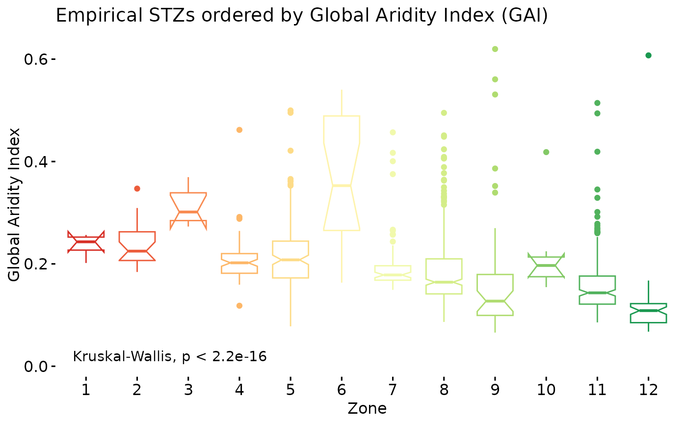
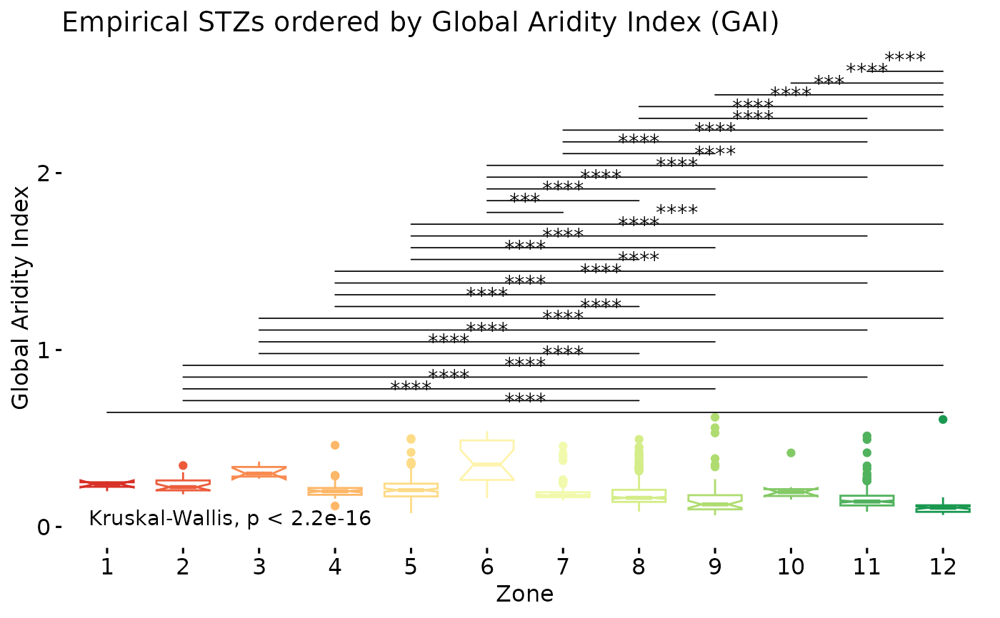
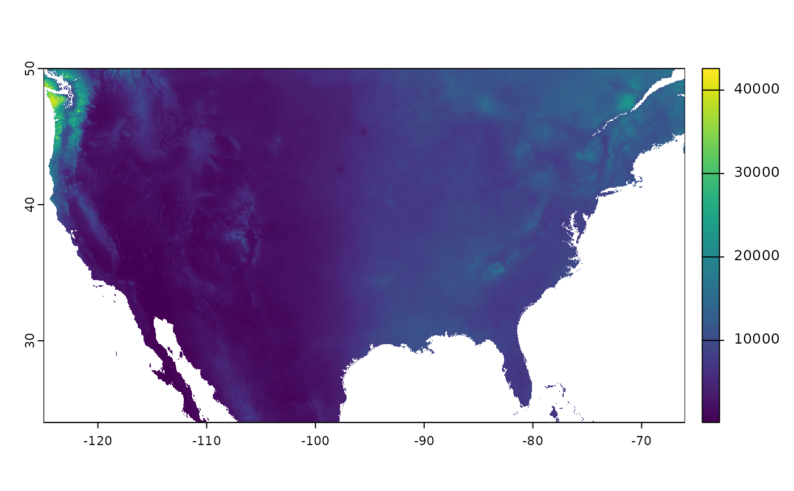

Suggest seed zones names, or at least numeric orders, based on input polygons
Source:R/orderZones.R
orderZones.RdGiven a shapefile of output seed transfer zones, with arbitrarily assigned class or zone identifiers (e.g. numeric) this function specifies an order to the zones from 1 to n zones reflecting an increase in humidity. In other words, this function can assign an order to Seed Zones ID's, where drier zones have lower numbers.
We have found it very difficult to discuss zones resulting from any PCA type analysis, or incorporating measurements of phenology etc. Further it is very difficult for us to estimate which zone a new population would be in, or notice many trends in the zones at all. This function uses on aridity, as formulated in the Global Aridity Index Version 3, as the ordering variable for zone numbering. For more information on GAI please see https://www.nature.com/articles/s41597-022-01493-1.
Results may not always be statistically robust, but hopefully convey some degree of useful information in their order regarding the range of the zones across the species.
Usage
orderZones(
x,
SeedZone = SeedZone,
SZName = SZName,
n = 2500,
rasta = "cont",
precision = 1000,
...
)Arguments
- x
an sf/tibble/dataframe containing the spatial data which will be distributed as a final product
- SeedZone
name of the column containing the provisional SeedZones. Defaults to SeedZone, and must be numeric.
- SZName
Name of the column containing the SZNames, this is to check against the SeedZone value. If the SZNames are determined to perfectly match the SeedZone values, they will be updated on function exit. Defaults to SZName.
- n
sample size of points across the entire shapefile for calculating an order, defaults to 2500. Note that this shouldn't exceed the number of raster cells of the products used to generate the stz, or results will be replicated.
- rasta
Either a terra::spatrast object or, a character string of either "coarse" or 'cont' - short for contiguous USA. GAI coarse has been aggregated by a factor of 2 from it's native 1km resolution to 4k, GAI cont is in the native resolution, but only covers the USA and a degree or so of Canada. If neither of the rasters contained in the package meet your requirements, resubmit the GAI raster.
- precision
Decrease the precision of coordinates to speed up extract operation. Works well given the raster template
- ...
additional parameters passed onto sf::st_sample
Value
A list containing three components, 'Reclassified' the shapefile which was submitted, with the #' seedzone values over written by the ones resulting from the function. 'Summary' a dataframe containing the original zones, and final zones, as well as the calculated median and the number of samples used to calculate the median. 'Plot' a ggpubr boxplot of the results of a kruskal-wallis test amongst seed zones.
Examples
acth7 <- sf::st_read(file.path(
system.file(package="eSTZwritR"), "extdata", 'ACTH7.gpkg')
)
#> Reading layer `ACTH7' from data source
#> `/home/runner/work/_temp/Library/eSTZwritR/extdata/ACTH7.gpkg'
#> using driver `GPKG'
#> Simple feature collection with 4967 features and 4 fields
#> Geometry type: MULTIPOLYGON
#> Dimension: XY
#> Bounding box: xmin: -121.5447 ymin: 36.53208 xmax: -111.0114 ymax: 46.35708
#> Geodetic CRS: WGS 84
## arbirarily small example for cran test, use 2500 in practice.
zoneOrder_suggestions <- orderZones(acth7, SeedZone = zone, n = 200)
zoneOrder_suggestions$Summary
#> # A tibble: 12 × 5
#> zone SuggestedOrder Zones_fct MedianGAI n
#> <dbl> <int> <fct> <dbl> <int>
#> 1 12 1 12 0.108 14
#> 2 9 2 9 0.131 8
#> 3 11 3 11 0.145 40
#> 4 8 4 8 0.165 60
#> 5 7 5 7 0.175 20
#> 6 10 6 10 0.187 4
#> 7 4 7 4 0.198 10
#> 8 5 8 5 0.241 34
#> 9 1 9 1 0.248 1
#> 10 2 10 2 0.281 2
#> 11 6 11 6 0.293 6
#> 12 3 12 3 0.323 1
zoneOrder_suggestions$PlotKruskal
#> Notch went outside hinges
#> ℹ Do you want `notch = FALSE`?
#> Notch went outside hinges
#> ℹ Do you want `notch = FALSE`?
#> Notch went outside hinges
#> ℹ Do you want `notch = FALSE`?
#> Notch went outside hinges
#> ℹ Do you want `notch = FALSE`?
#> Notch went outside hinges
#> ℹ Do you want `notch = FALSE`?
#> Notch went outside hinges
#> ℹ Do you want `notch = FALSE`?
#> Notch went outside hinges
#> ℹ Do you want `notch = FALSE`?

zoneOrder_suggestions$PlotDunns
#> Notch went outside hinges
#> ℹ Do you want `notch = FALSE`?
#> Notch went outside hinges
#> ℹ Do you want `notch = FALSE`?
#> Notch went outside hinges
#> ℹ Do you want `notch = FALSE`?
#> Notch went outside hinges
#> ℹ Do you want `notch = FALSE`?
#> Notch went outside hinges
#> ℹ Do you want `notch = FALSE`?
#> Notch went outside hinges
#> ℹ Do you want `notch = FALSE`?
#> Notch went outside hinges
#> ℹ Do you want `notch = FALSE`?

acth7
#> Simple feature collection with 4967 features and 4 fields
#> Geometry type: MULTIPOLYGON
#> Dimension: XY
#> Bounding box: xmin: -121.5447 ymin: 36.53208 xmax: -111.0114 ymax: 46.35708
#> Geodetic CRS: WGS 84
#> First 10 features:
#> ID GRIDCODE area_ha zone geom
#> 1 13 42 2200 11 MULTIPOLYGON (((-117.5447 4...
#> 2 19 32 774 8 MULTIPOLYGON (((-117.4364 4...
#> 3 24 42 774 11 MULTIPOLYGON (((-116.728 46...
#> 4 26 42 2916 11 MULTIPOLYGON (((-117.653 46...
#> 5 38 41 1608 10 MULTIPOLYGON (((-116.7114 4...
#> 6 44 41 834 10 MULTIPOLYGON (((-116.7614 4...
#> 7 58 42 1251 11 MULTIPOLYGON (((-117.8864 4...
#> 8 70 32 1371 8 MULTIPOLYGON (((-117.4447 4...
#> 9 76 42 3930 11 MULTIPOLYGON (((-117.453 46...
#> 10 107 31 1490 7 MULTIPOLYGON (((-116.8614 4...
zoneOrder_suggestions$Reclassified
#> Simple feature collection with 4967 features and 5 fields
#> Geometry type: MULTIPOLYGON
#> Dimension: XY
#> Bounding box: xmin: -121.5447 ymin: 36.53208 xmax: -111.0114 ymax: 46.35708
#> Geodetic CRS: WGS 84
#> First 10 features:
#> ID GRIDCODE area_ha zone geom SZName
#> 1 13 42 2200 3 MULTIPOLYGON (((-117.5447 4... 3
#> 2 19 32 774 4 MULTIPOLYGON (((-117.4364 4... 4
#> 3 24 42 774 3 MULTIPOLYGON (((-116.728 46... 3
#> 4 26 42 2916 3 MULTIPOLYGON (((-117.653 46... 3
#> 5 38 41 1608 6 MULTIPOLYGON (((-116.7114 4... 6
#> 6 44 41 834 6 MULTIPOLYGON (((-116.7614 4... 6
#> 7 58 42 1251 3 MULTIPOLYGON (((-117.8864 4... 3
#> 8 70 32 1371 4 MULTIPOLYGON (((-117.4447 4... 4
#> 9 76 42 3930 3 MULTIPOLYGON (((-117.453 46... 3
#> 10 107 31 1490 5 MULTIPOLYGON (((-116.8614 4... 5
# if you want to see the extent of the continental raster
# note that the Olympic peninsula and BC get so much rain they essentially
# swamps the colors of all other areas in plots.
cont <- terra::rast(
file.path(
system.file(package="eSTZwritR"), "extdata", 'GAI-cont.tif')
)
terra::plot(cont)
